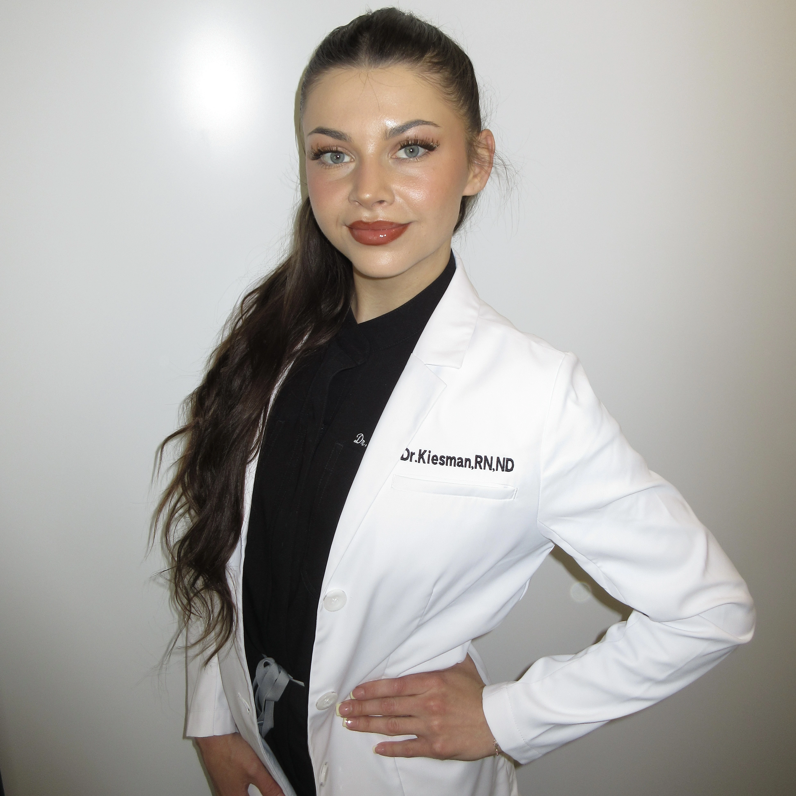

Naturopathic Medicine · Kelowna, BC
Blending evidence backed naturopathic medicine with modern aesthetic care to support your health, hormones, skin, energy, and overall wellbeing.
Book a Free Consultation
About Dr. Kiesman
I'm a licensed naturopathic doctor with a background in nursing and a passion for helping patients feel healthy, confident, and supported through every stage of their wellness journey. My practice combines evidence backed naturopathic medicine with modern aesthetic care, with a focus on hormones, digestion, stress, skin health, IV therapy, and preventative wellness. I believe healthcare should feel personalized, empowering, and rooted in long-term wellbeing.
I’ve always loved the intersection of wellness and aesthetics, helping patients feel confident both internally and externally. Today, I’m grateful to offer care that blends modern medicine, natural therapies, and aesthetic treatments in a way that feels thoughtful, individualized, and aligned with your values and goals.
My Story
Growing up in the small coastal town of Prince Rupert, BC shaped the way I approach patient care; with authenticity, compassion, and genuine connection. I completed my nursing education in rural Northern BC, where I gained valuable clinical experience and developed a strong foundation in safe, patient-centered care.
Throughout medical school, I worked as a Registered Nurse in a naturopathic clinic providing IV therapies and injections. That experience deepened my passion for preventative medicine, health optimization, and connecting with patients.
What I Offer
A complimentary 15-minute consultation to discuss your health goals, concerns, and determine the best approach to support your care.
Personalized support for hormonal balance, PCOS, endometriosis, menopause, PMS, acne, and menstrual irregularities to help you feel more balanced and supported at every stage.
Root-cause focused care for bloating, IBS, SIBO, leaky gut, and digestive discomfort to improve gut health and overall wellbeing.
Comprehensive assessment and treatment of burnout, chronic stress, adrenal dysfunction, poor sleep, and low energy to help restore resilience, focus, and vitality.
Personalized, sustainable support for weight management through nutrition, metabolism, hormone balance, lifestyle medicine, and long-term health optimization.
Proactive, individualized care focused on optimizing long-term health, preventing chronic disease, improving longevity, and helping you feel your best at every stage of life.
Aesthetic Medicine
Targeted nutrient delivery through IV vitamin therapy and IM injections provides an efficient way to support energy, immunity, stress resilience, hydration, and overall wellness. Each treatment is personalized to your needs to help restore balance, optimize nutrient status, and support how you feel day to day.
Learn More →Iron Therapy delivers iron directly into the bloodstream to effectively restore iron levels and support healthy red blood cell production. This treatment can help improve fatigue, energy, and overall wellbeing in individuals with iron deficiency.
Learn More →Neuromodulator treatments soften fine lines and wrinkles by temporarily relaxing targeted facial muscles, while dermal filler restores lost volume and enhances facial contours. Each treatment is customized to create a naturally refreshed, balanced look that maintains your expression.
Learn More →Morpheus8 is an advanced radiofrequency microneedling treatment designed to deeply remodel the skin, improve texture, and stimulate collagen at multiple levels. This treatment helps tighten, smooth, and rejuvenate the skin for a more refined and youthful appearance over time.
Learn More →Laser treatments include IPL and laser hair removal, designed to improve overall skin clarity and smoothness. IPL targets redness, sun damage, and hyperpigmentation to create a more even, radiant complexion, while laser hair removal reduces unwanted hair for long-lasting, smooth results.
Learn More →Acupuncture is used as a targeted treatment for musculoskeletal pain and dysfunction, helping reduce pain, improve mobility, and support recovery. Often paired with cupping to ease muscle tightness, improve circulation, and promote the body's natural healing response.
Learn More →Visit Us